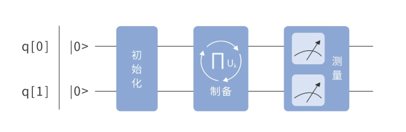
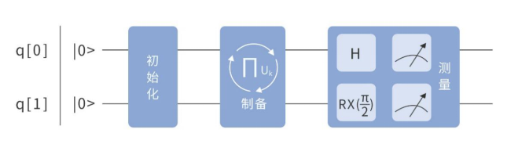

4.6 VQE算法¶
随着量子化学理论的不断完善，计算化学已经成了化学工作者解释实验现象、预测实验结果、指导实验设计的重要工具，在药物的合成、催化剂的制备等方面有着广泛的应用。但是，面对计算化学所涉及的巨大计算量，经典计算机在计算精度、计算尺寸等方面显得能力有限，这就在一定程度上限制了计算化学的发展。而费曼曾提出：可以创造一个与已知物理系统条件相同的系统，让它以相同的规律演化，进而获得我们自己想要的信息。费曼的这一猜想提示我们——既然化学所研究的体系是量子体系，我们何不在量子计算机上对其进行模拟呢？
就目前的量子计算机发展水平而言，可以通过变分量子特征值求解算法（Variational-Quantum-Eigensolver，简称VQE），在量子计算机上实现化学模拟。该算法作为用于寻找一个较大矩阵H的特征值的量子与经典混合算法，不仅能保证量子态的相干性，其计算结果还能达到化学精度。
4.6.1 计算化学¶
1.1 定义
计算化学，顾名思义，就是利用数学方法通过计算机程序对化学体系进行模拟计算，以解释或解决化学问题。它主要包括两个分支——量子化学与分子模拟。

图4.6.1 计算化学
1.2 作用
早期由于计算能力较弱，化学研究主要以理论和实验交互为主。但随着科学技术的蓬勃发展、量子化学理论的不断完善，计算已经成为一种独立的科研手段，与理论和实验形成三足鼎立之势，如图4.6.2。

图4.6.2 三足鼎立之势
而如今，计算化学对于化学工作者来说，已经成了解释实验现象、预测实验结果、指导实验设计的重要工具，在材料科学、纳米科学、生命科学等领域得到了广泛的应用。
（1）原子间库仑衰变现象的成功预测
早在1997年，赛德鲍姆（Cederbaum）等人通过计算和分析HF分子和水分子的电离谱，成功预测了2003年才发现的原子间库仑衰变现象（Interatomic Coulobic Decay,简称ICD）。

图4.6.3 HF分子和水分子的电离谱 \(^{[52]}\)
原子间库仑衰变现象是指对于组成团簇的原子（或分子），如果它的电子层中存在激发态的电子，就可能会把能量传递到相邻原子的价层电子，使得后者电离变成阳离子。

图4.6.4 原子间库仑衰变现象 \(^{[53]}\)
如图4.6.4中所示，左侧原子中的一个激发态电子，从高能级跃迁至低能级时，所释放出的能量被右侧原子的一个价层电子吸收，由于原子核对价层电子的束缚能力本来就比较弱，所以吸收了这部分能量的价层电子很容易逸出，使右侧原子变成阳离子。
如今，人们正在尝试将这种现象应用于DNA损伤修复领域。

图4.6.5 DNA损伤修复
（2）α突触核蛋白聚集过程的动力学模拟
2007年，齐格列尼等美国科研工作者利用超级计算中心的运算能力，对含有23万多个原子的体系进行动力学模拟，并结合生物化学分析和超微结构分析，首次揭示了α突触核蛋白的聚集过程及其在细胞膜表面形成致病孔状结构的复杂过程，这一成果为帕金森症的治疗提供了新的线索。

图4.6.6 动力学模拟
4.6.2 量子化学¶
量子化学，作为计算化学的主要研究方向之一，简单来说就是应用量子力学的规律和方法来研究化学问题。

图4.6.7 量子化学
量子化学的研究范围包括：分子的结构、性质及其结构与性能之间的关系；分子与分子之间的相互作用；分子之间的相互碰撞和相互反应等问题。P.O.Lowdin提出量子化学可以分为三个领域，包括基础理论、计算方法和应用研究，三者之间相互影响，构成了三角关系，只有严密的理论、精细的算法、深入的应用相结合，才能构成完美的量子化学。但是，要想真正通过计算模拟、运用基础理论去解决或解释化学问题，仅仅依靠精细的算法还是无法实现，必须还要借助于计算机的计算能力。可以说，量子化学的发展与计算机的发展息息相关。

图4.6.8 三角关系
由于在对一个 \(N\) 电子体系计算模拟时，往往需要解薛定谔方程，这就涉及到了 \(3N\) 维波函数的求解。
由此可知，计算量会随着研究体系的电子数的增加而呈指数式递增。
就目前而言，面对量子化学计算中所涉及到的如此惊人的计算量，经典计算机在计算精度、计算范围等方面十分有限。想要突破这一瓶颈，就必须依靠量子计算机强大的计算能力。因此，在量子计算机上实现量子化学模拟刻不容缓。
4.6.3 量子化学模拟¶
量子计算最引人注目的可能性之一是对其它量子系统的模拟。量子系统的量子模拟包含了广泛的任务，其中最重要的任务包括：
量子系统时间演化的模拟。
基态属性的计算。
当考虑相互作用的费米子系统时这些应用特别有用，例如分子和强相关材料；费米子系统的基态性质的计算是凝聚态哈密顿量的相图映射出来的起点，它也为量子化学中电子结构问题的关键问题即反应速率提供了途径。
由于在化学应用中的相关性，尺寸相对适中的分子系统，它们被认为是早期量子计算机的理想测试平台。更正式地，基态问题要求如下：
对于某些物理哈密顿量 \(\mathrm{H}\) , 找到其最小特征值 \(\mathrm{E}{g}\) ，这样 \(\mathrm{H}\left|\varphi{g}\right\rangle=\mathrm{E}{g}\left|\varphi{g}\right\rangle\) ，其中 \(\left|\varphi_{g}\right\rangle\) 是对应于 \(\mathrm{E}_{g}\) 的特征向量。
而量子化学模拟是指，将真实化学体系的哈密顿量（包括其形式和参数）映射到由自己构建的可操作哈密顿量上，然后通过调制参数和演化时间，找到能够反映真实体系的本征态。

图4.6.9 量子化学模拟过程
众所周知，即使在量子计算机上，这个问题通常也是难以处理的，这意味着不能指望有一种有效的量子算法可以用来准备一般哈密顿量的基态。尽管存在这种限制，但对于特定的哈密顿量而言考虑到相互作用的物理限制，有可能有效地解决上述问题。目前，至少存在四种不同的方法来解决这个问题：
量子相位估计：假设可以近似准备状态 \(| \varphi_g \rangle\) ，该例使用哈密顿量的受控来找到其最小的特征值。
量子力学的绝热定理：通过哈密顿量的缓慢演化，量子系统被绝热地从一个普通哈密顿量的基态演化为期望目标问题的哈密顿量基态。
耗散（非酉矩阵）量子操作：目标系统的基态是个固定点，而非平凡假设是指在量子硬件上实现耗散映射。
变分量子特征值求解算法：假设基态可以用包含相对较少参数的参数化表示。
为了使量子化学模拟在近期硬件设备上实现，我们采用变分量子特征值求解算法(Variational-Quantum-Eigensolver，简称VQE)来寻找体系的基态。该量子算法不仅能保证量子态的相干性，其计算结果还能达到化学精度。
该算法是用于寻找一个较大矩阵H的特征值的量子与经典混合算法，如图4.6.10所示：

图4.6.10 算法示意图
量子化学计算包
常用的量子化学包有ussian16、PyQuante、pySCF、PSI4等。

图4.6.11 量子化学计算包
其中，PSI4；它是开源的一款从头算量子化学计算包，它能够运用Hatree-Fock方法、密度泛函理论、耦合团簇理论、组态相互作用方法等方法对电子结构进行计算。后续章节将利用PSI4中的Hatree-Fock方法计算得到的二次哈密顿量构造量子线路，寻找H2的基态。
4.6.4 费米子的哈密顿量¶
1、二次量子化哈密顿量
在之前的章节中，我们曾提到描述 \(N\) 电子体系的薛定谔方程，其中式 (1) 中的 \(\hat{\mathrm{H}}\) 算符就是哈密顿算符。在玻恩-奥本海默近似下，电子哈密顿算符可以写成式 (2) 这种形式，其中 \(-\frac{1}{2} \sum_{i} \nabla_{i}^{2}\) 是电子的动能项; \(-\sum_{A,i} \frac{Z_{A}}{r_{A i}}\) 是核与电子之间的引力势能项; \(\sum_{i>j}\frac{1}{r_{i j}}\) 是电子之间的排斥能项。式 (2) 被称之为 “一次量子化电子哈密顿算符”。
如图4.6.12所示，由于一次量子化哈密顿量映射到量子比特上需要耗费的量子比特数要比二次量子化哈密顿量多，VQE算法选择了更为经济的二次量子化哈密顿量。

图4.6.12 一次量子化与二次量子化
所谓二次量子化哈密顿量就是将波场函数转换为场算符，这一转换需要借助创造算子 \(\mathrm{a}{\mathrm{p}}^{\dagger}\) 和湮灭算子 \(\mathrm{a}{\mathrm{q}}\) 来实现，它们满足反对易关系，即：
最终可以得到如下形式的二次量子化哈密顿量：
该式中， \(\sum_{p q} h_{p q} a_{p}^{\dagger} a_{q}\) 是单粒子算符， \(\frac{1}{2} \sum_{p q r s} h_{p q r s} a_{p}^{\dagger} a_{q}^{\dagger} a_{r} a_{s}\) 是双粒子算符；下标 \(pqrs\) 分别代表不同的单电子自旋分子轨道， \(h_{p q}\) 和 \(h_{p q r s}\) 是常数项，前者称为 单电子积分项，后者称为双电子积分项。
计算公式如下:
\(\chi_{\mathrm{p}}\) 、 \(\chi_{\mathrm{q}}\) 等分别表示不同的单电子自旋轨道波函数； \(\mathrm{Z}_{\alpha}\) 表示核电荷; \(\mathrm{r}_{\alpha}\) 表示核位置; \(\mathrm{r}_{1}\) 、 \(\mathrm{r}_{2}\) 分别表示不同电子的位置。
从 \(h_{pq}\) 的计算公式中，可以发现括号中的两项正是一次量子化哈密顿量中的电子动能项 \(-\frac{1}{2} \nabla^{2}\) 和核与电子之间的引力势能项 \(-\sum_{\alpha} \frac{z_{\alpha}}{\left|r_{\alpha}-r\right|}\) , 只不过这里采用的是原子单位; 从 \(h_{p q r s}\) 的计算公式中，可以发现， \(\frac{1}{\left|r_{1}-r_{2}\right|}\) 正是一次量子化哈密顿量中的电子间排斥能项。由此可见， \(h_{p q}\) 和 \(h_{pqrs}\) 起到了联系二次量子化哈密顿量与一次量化哈密顿量的作用。
2、H2分子费米子哈密顿量
众所周知，每个氢原子都有一个电子，填充在1s轨道上，如图4.6.13所示：

图4.6.13 氢原子
而氢分子则由两个氢原子组成，那么它就含有两个电子。以q0、q1量子比特表示a号氢原子自旋向下和自旋向上的1s轨道，以q2、q3分别表示b号氢原子自旋向下和自旋向上的1s轨道，如图4.6.14所示。

图4.6.14 氢分子
假设氢分子的两个电子分别处在q0和q1这两个轨道上面，如图4.6.15所示：

图4.6.15 q0和q1轨道
如果以量子态 \(|1 \rangle\) 表示自旋轨道上有一个电子，以量子态 \(|0 \rangle\) 表示自旋轨道为空轨道，那么此时氢分子的状态可以表示为 \(|0011 \rangle\) 。
当q0上的电子跃迁到q2上时，也就是电子先从q0上“湮灭”，然后在q1上“创造”，如图4.6.16所示：

图4.6.16 q0上的电子跃迁到q2上
此时，其簇算符表示为
同理，当q0上的电子跃迁到q3上时，其哈密顿量可以表示为
当q1上的电子跃迁到q2上时，其哈密顿量可以表示为
当q1上的电子跃迁到q3上时，其哈密顿量可以表示为
当q0、q1上的电子同时跃迁到q2、q3上时，其哈密顿量可以表示为
\(\mathrm{\hat{T}}_{1}\) 、 \(\mathrm{\hat{T}}_{2}\) 、 \(\mathrm{\hat{T}}_{3}\) 、 \(\mathrm{\hat{T}}_{4}\) 所描述的电子跃迁形式为单激发形式，而H5则是双激发形式。对于氢分子而言，由前四项单激发所构造成的哈密顿量称之为CCS，而由单激发和双激发所共同构造成的哈密顿量被称之为CCSD，也就是这五项之和，即：

图4.6.17 CCS和CCSD
3、费米子算符类
假设，用字符串 \(X\) 来表示湮没算符，用字符串 \(X+\) 来表示创建算符，其中 \(X\) 表示电子轨道的序号，表达为：
例如, \(\{^{\prime \prime} 1+0^{\prime \prime}, 2\} \equiv 2 a_{1}^{\dagger} a_{0}\) ，表示电子在 0 号轨道湮没，在1号轨道创建，其系数为2; \(\{^{\prime \prime}3+2+1+0^{\prime \prime}, 3\} \equiv 3 a_{3}^{\dagger} a_{2}^{\dagger} a_{1} a_{0}\) 表示有两个电子同时从0号轨道和1号轨道湮没，并在3号轨道和 2 号轨道创建，其系数为3。另外也可以定义电子之间的排斥能，例如： \(\{^{\prime \prime\ \ \prime\prime}, 2\}=2 I\) ，表示电子之间的排斥能为 2 。
在QPanda中实现示例
通过如下示例代码构建费米子算符类。使用C++构建方式：
1.#include "Operator/FermionOperator.h"
2.int main()
3.{
4. using namespace QPanda;
5. FermionOperator p1;
6. FermionOperator p2({ {“1+ 0”, 2},{“3+ 2+ 1 0”, 3} });
7. FermionOperator p3(“1+ 0”, 2);
8. FermionOperator p4(2); // FermionOperator p4(“”, 2);
9. FermionOperator p5(p2);
10.
11. return 0;
12.}
python构建方式：
1.from pyqpanda import *
2.if __name__=="__main__":
3. p1 = FermionOperator()
4. p2 = FermionOperator({'1+ 0': 2,'3+ 2+ 1 0': 3})
5. p3 = FermionOperator('1+ 0', 2)
6. p4 = FermionOperator(2)
7. p5 = p2
构造一个空的费米子算符类P1，里面不包含任何创建和湮没算符及单位矩阵；也可以通过前面所述的规则，以字典序的形式构建多个表达式，例如P2；或者只构建一个表达式例如P3；还可以只构造一个电子之间排斥能项，例如P4；也可以通过已经构造好的费米子算符来构造它的一份副本例如P5。
费米子算符类支持常规的加、减、乘等运算操作。计算返回的结果还是一个费米子算符类。
假设定义了a和b两个费米子算符类，可以让费米子算符类之间进行加操作，减操作和乘操作。使用C++示例：
1.#include "Operator/FermionOperator.h"
2.using namespace QPanda;
3.int main()
4.{
5. FermionOperator a(“1+ 0", 2);
6. FermionOperator b(“3+ 2", 3);
7. auto plus = a + b;
8. auto minus = a - b;
9. auto muliply = a * b;
10.
11. return 0;
12.}
python示例：
1.from pyqpanda import *
2.if __name__=="__main__":
3. a = FermionOperator('1+ 0', 2)
4. b = FermionOperator('3+ 2', 3)
5. plus = a + b
6. minus = a - b
7. muliply = a * b
费米子算符类同样也支持打印功能，可以直接将费米子算符类打印输出到屏幕上。C++打印输出方式：
1. std::cout << "a + b = " << plus << std::endl;
2. std::cout << "a - b = " << minus << std::endl;
3. std::cout << "a * b = " << multiply << std::endl;
python打印输出方式：
1. print("a + b = {}".format(plus))
2. print("a - b = {}".format(minus))
3. print("a * b = {}".format(muliply))
通过使用上述示例代码， a+b，a-b和a*b的计算结果如下：
1.a + b = {
2.1+ 0 : 2.000000
3.3+ 2 : 3.000000
4.}
5.a - b = {
6.1+ 0 : 2.000000
7.3+ 2 : -3.000000
8.}
9.a * b = {
10.1+ 0 3+ 2 : 6.000000
11.}
还可以通过normal_ordered接口对费米子算符进行整理。在这个转换中规定张量因子从高到低进行排序，并且创建算符出现在湮没算符之前。
整理规则如下：对于相同数字，交换湮没和创建算符，等价于单位1减去正规序，如果同时存在两个创建或湮没算符，则该项表达式等于0；对于不同的数字，整理成正规序，需要将正规序的系数变为相反数。
normal_ordered接口的使用方式如示例代码所示。C++示例：
1.#include "Operator/FermionOperator.h"
2.using namespace QPanda;
3.int main()
4.{
5. FermionOperator a("0 1 3+ 2+", 2);
6. auto muliply = a.normal_ordered() ;
7. std::cout << “before = " << a << std::endl;
8. std::cout << “after = " << b << std::endl;
9. return 0;
10.}
python示例：
1.from pyqpanda import *
2.if __name__=="__main__":
3. a = FermionOperator('0 1 3+ 2+', 2)
4. b = a.normal_ordered()
5. print("before = {}".format(a))
6. print("after = {}".format(b))
对于表达式“0 1 3+ 2+”，整理成正规序“3+ 2+ 1 0”，相当于不同数字交换了5次，系数变为了相反数。
1.before = {
2.0 1 3+ 2+ : 2.000000
3.}
4.after = {
5.3+ 2+ 1 0 : -2.000000
6.}
费米子算符类还提供了其它一些常用功能，例如：isEmpyt接口，用来判断是否是个空的费米子算符；toString接口返回费米子算符的字符串形式；data接口返回费米子算符内部为维护的数据
1.isEmpyt() // 判空
2.toString() // 返回字符串形式
3.data() // 返回内部维护的数据
C++示例：
1.#include "Operator/FermionOperator.h"
2.using namespace QPanda;
3.int main()
4.{
5. FermionOperator a(“1+ 0", 2);
6.
7. auto data = a.data();
8.
9. std::cout << “isEmpty = “ << a.isEmpty() << std::endl;
10. std::cout << “stringValue = “ << a.toString() << std::endl;
11.
12. return 0;
13.}
python示例：
1.from pyqpanda import *
2.if __name__=="__main__":
3.
4. a = FermionOperator('1+ 0', 2)
5.
6. print("isEmpty = {}".format(a.isEmpty()))
7. print("strValue = {}".format(a.toString()))
8. print("data = {}".format(a.data()))
计算结果为：
1.isEmpty = False
2.strValue = {
3.1+ 0 : 2.000000
4.}
5.data = [(([(1, True), (0, False)], '1+ 0'), (2+0j))]
4、可变费米子算符类和可变泡利算符类
费米算符类是一个模板类，如果用complex来构造该模板参数T，得到的就是费米子算符类；如果用complex_var类来构造模板参数T，得到的就是可变费米子算符类；同样泡利算符类也是一个模板类，选择不同的模板参数类型，可以得到泡利算符类和可变泡利算符类，如图4.6.18。

图4.6.18 泡利算符类和可变泡利算符类
可变费米子算符类和可变泡利算符类，跟费米子算符类和泡利算符类拥有相同的接口，但是在构造它们的时候所传的参数是个Var变量。Var类是VQNet框架中的符号计算系统，在表达式不变的情况下，通过改变Var的值，即可改变表达式的值。因此可以通过构造可变费米子算符类和可变泡利算符类并利用VQNet框架，来实现VQE算法。
C++示例：
1.#include “Veriational/VarFermionOperator.h"
2.#include “Veriational/VarPauliOperator.h"
3.using namespace QPanda;
4.using namespace Variational;
5.int main()
6.{
7. var a(2, true) ;
8. var b(3, true) ;
9. VarFermionOperator fermion_op("1+ 0", a);
10. VarPauliOperator pauli_op("Z1 Z0", b);
11. return 0;
12.}
python示例：
1.from pyqpanda import *
2.if __name__=="__main__":
3.
4. a = var(2, True)
5. b = var(3, True)
6. fermion_op = VarFermionOperator('1+ 0', a)
7. pauli_op = VarPauliOperator('Z1 Z0', b)
费米子算符类构造分子的哈密顿量示例介绍
通过向get_ccsd接口传入轨道个数（也就是比特数）、电子数和每一个子项的系数，即可构造所需的费米子哈密顿量。
1.def get_ccsd(qn, en, para):
2. if n_electron>n_qubit:
3. assert False
4. if n_electron==n_qubit:
5. return FermionOperator()
6. if get_ccsd_n_term(qn, en) != len(para):
7. assert False
8.
9. cnt = 0
10.
11. fermion_op = FermionOperator()
12. for i in range(en):
13. for ex in range(en, qn):
14. fermion_op += FermionOperator(str(ex) + "+ " + str(i), para[cnt])
15. cnt += 1
16.
17. for i in range(n_electron):
18. for j in range(i+1,n_electron):
19. for ex1 in range(n_electron,n_qubit):
20. for ex2 in range(ex1+1,n_qubit):
21. fermion_op += FermionOperator(
22. str(ex2)+"+ "+str(ex1)+"+ "+str(j)+" "+str(i),
23. para[cnt]
24. )
25. cnt += 1
26.
27. return fermion_op
在图4.6.19中，红色框起来的部分代码构造的是单电子激发的哈密顿量，绿色框起来的部分构造的是双电子激发的哈密顿量。构造CCS只需要包含红色框起来的部分即可，而构造CCSD需要包含红色和绿色框起来的代码。

图4.6.19 构造CCS和CCSD
在二次量子化哈密顿量的介绍中，曾提到过费米子算符遵循反对易关系， \(\left[a_{p}^{\dagger}, a_{q}\right]=\delta_{p q}\) ， 因此， 在进行量子化学模拟时，将费米子哈密顿量成功映射到量子比特 上的核心问题在于能否在量子线路的构造中将这一反对易关系反映出来,为了解决这一问题，需要通过J-W变换、Parity变换、B-K变换等方法将费米子算符转换成泡利算符。
J-W变换
将创造算子和湮灭算子分别表示成式 (1) 、式 (2) 这种形式, 其中, \(n\) 表示自旋轨道的数目，也就是量子比特数; \(j\) 为算符所作用的子空间，也就是量子比特序号; \(\quad Z^{\rightarrow}_{j-1}\) 这一项被称之为宇称算子，定义如下:
为了能够同 \(Z_{j-1}\) 一起将创造算子和湮灭算子之间的反对易关系反映出来，需要将 \(Q^{+}\) 、 \(Q^{-}\) 分别构造成 \(|1\rangle\) 和 \(|0\rangle\) 的外积、 \(|0\rangle\) 和 \(|1\rangle\) 的外积，即：
\(J-W\) 变换需要消耗的逻辑门个数与量子比特数成线性关系。
可以通过QPanda或者pyQPanda来构造 \(J-W\) 变换，这里给出的是python代码示例， get_fermion_jordan_wigner接口返回的是费米子算符中的一个子项 \(J-W\) 变换。
1.def get_fermion_jordan_wigner(fermion_item):
2. pauli = PauliOperator("", 1)
3. for i in fermion_item:
4. op_qubit = i[0]
5. op_str = ""
6. for j in range(op_qubit):
7. op_str += "Z" + str(j) + " "
8. op_str1 = op_str + "X" + str(op_qubit)
9. op_str2 = op_str + "Y" + str(op_qubit)
10.
11. pauli_map = {}
12. pauli_map[op_str1] = 0.5
13.
14. if i[1]:
15. pauli_map[op_str2] = -0.5j
16. else:
17. pauli_map[op_str2] = 0.5j
18.
19. pauli *= PauliOperator(pauli_map)
20.
21. return pauli
JordanWignerTransform是对整个费米子算符进行 \(J-W\) 变换。
1.def JordanWignerTransform(fermion_op):
2. data = fermion_op.data()
3. pauli = PauliOperator()
4. for i in data:
5. pauli += get_fermion_jordan_wigner(i[0][0])*i[1]
6. return pauli
JordanWignerTransformVar是对可变费米子算符进行 \(J-W\) 变换。
1.def JordanWignerTransformVar(var_fermion_op):
2. data = var_fermion_op.data()
3. var_pauli = VarPauliOperator()
4. for i in data:
5. one_pauli = get_fermion_jordan_wigner(i[0][0])
6. for j in one_pauli.data():
7. var_pauli += VarPauliOperator(j[0][1], complex_var(
8. i[1].real()*j[1].real-i[1].imag()*j[1].imag,
9. i[1].real()*j[1].imag+i[1].imag()*j[1].real))
10.
11. return var_pauli
Parity变换
\(X_{j+1}^{\leftarrow}\) 称为更新算子，定义式如下：
通过比较J-W变换和Parity变换，可以发现，由于J-W变换中存在宇称算子，而Parity变换中存在更新算子，所以Parity变换所需要消耗的逻辑门数也是与量子比特数成线性关系。
B-K 变换
从B-K变换的表达式不难发现，它要比J-W变换和Parity变换复杂的多，因为它既有更新算子 \(X_U\) ，又有宇称算子 \(Z_P\) ，只不过在这里，更新算子不再是 \((\mathrm{n}-\mathrm{j}-1)\) 个泡利X的张量积，宇称算子也不再是j个泡利Z的张量积。最后一项 \(Z_{P(j)}\) 在j为偶数时，就等于宇称算子，在j为奇数时，就等于 \(Z_{R(j)}\) 。 \(R(j)\) 被称之为余子集，它等于 \(P(j)\) 对翻转集 \(F(j)\) 求余，即：
假设 \(j=3\) , 若 \(U(3)=(q5,q6)\) , \(P(3)=(q0,q2)\) , \(F(3)=(q0)\) ，则更新算子就等于作用于相应量子比特上的两个泡利 \(x\) 的张量积，宇称算子就等于作用于相应量子比特上的两个泡利 \(z\) 的张量积。
而余子集：
由此：
虽然，B-K变换相对于J-W变换和Parity变换的在形式上很复杂，但实际上它所需要消耗的量子逻辑门数是与量子比特数的对数成线性关系，可以节省量子逻辑门资源，简化量子线路。
4.6.5 算法原理¶
对于一个 \(n\) 阶的较大方阵，如果想找到它的特征值， \(\lambda_{1} \lambda_{2} \ldots \lambda_{n}\) 可以利用VQE算法，同样该算法也可以寻找到描述某一体系 (如多电子体系) 的哈密顿量的特征值， \(\mathrm{E}_{1} ,\mathrm{E}_{2}, \cdots ,\mathrm{E}_{n}\) ，进而求得体系的基态能量 \(\mathrm{E}_0\) ， VQE算法是基于变分原理而提出的。
所谓变分原理，是指对于任意一个试验态 (它是一个品优波函数)，用某一体系 (如多电子体系) 的哈密顿量作用于它时，可以得到该体系在这一状态下的平均能量 \(\mathrm{E}\) ，它将大于或接近于体系的基态能量 \(\mathrm{E}_{0}\) ，即：
从该表达式中不难看出，如果所选择的试验态 \(|\psi\rangle\) 正好就是体系的基态 \(\left|\psi_{0}\right\rangle\) , 那么不等式中的等号成立，直接得到了体系的基态能量 \(\mathrm{E}\) ; 但往往更多的情况是, 选择的试验态 \(|\psi\rangle\) 与体系的基态相比有一定差距，导致计算得到的 \(\mathrm{E}\) 大于 \(\mathrm{E}_0\) 很多，这时就需要引入一组参数 \(\vec{ \mathrm{t}}\) ，通过不断调节 来调节试验态， \(\vec{ \mathrm{t}}\) 使其最终非常接近体系的基态。
通过对变分原理的介绍，可以发现：VQE算法在寻找体系基态能量时，实际上需要依次完成三步操作：
(1) 制备试验态 \(\left|\psi\left(\vec{ \mathrm{t}}\right)\right\rangle\) ；
(2) 测量试验态 \(\left|\psi\left(\vec{ \mathrm{t}}\right)\right\rangle\) 的平均能量 \(\mathrm{E}_n\) ;
(3) 判断 \(\mathrm{E}_n - \mathrm{E}_{n-1}\) 是否小于所设定的阈值，是，就返回 \(\mathrm{E}_n\) 作为基态能量; 否，则用优化器优化生成一组新参数 \(\vec{ \mathrm{t}}\) 重新制备试验态。

图4.6.20 VQE算法
显然，如图4.6.20所示，这是一个循环迭代的过程。其中，步骤（1）和（2）是在量子处理器上完成的，步骤（3）是在经典处理器上完成的。在构造量子线路以制备试验态时， VQE算法利用了幺正耦合团簇理论(UCC理论)和渐进近似定理；在试验态能量进行测量时，VQE采用的是量子期望估计方法；在对参数 \(\vec{t}\) 进行优化时，VQE算法利用的是非线性的经典优化器，包括梯度无关和梯度相关两大类，这两类优化器已经在QAOA算法原理章节介绍过了，这里不再赘述。
1、初始化Hatree-Fock态
对于含有四个单电子自旋分子轨道两个电子的氢分子的Hatree-Fock态，是用量子态 \(|0011\rangle\) 来表示的，即一个量子比特代表一个自旋分子轨道， \(|0\rangle\) 表示空轨道， \(|1\rangle\) 表示占据轨道。这样的话，只要在q[0]和q[1]上分别加上一个 \(NOT\) 门，就可以在量子线路中将 \(|0000\rangle\) 初始化成 \(|0011\rangle\) ，如图4.6.21所示。

图4.6.21 初始化Hartree-Fock态
事实上，对于任意一个含有M个自旋分子轨道分子轨道的N电子体系，它的hatree-fock态都可以这样简单的表示，如图4.6.22所示，只要在量子线路中给定M个量子比特，然后在前N个量子线路上加上NOT门即可得到所需要的N电子体系的hatree-fock态。
\(N\) 电子体系（ \(M\) 自旋轨道）： \(|\varphi\rangle_{\text {Hartree-Fock }} \equiv |0 \ldots 011 \ldots 11\rangle\)

图4.6.22 N电子体系的Hartree-Fock态
在QPanda或pyQPanda中用如下示例代码来初始化Hatree-fock态：
1.def prepareInitialState(qlist, en):
2. circuit = QCircuit()
3. if len(qlist) < en:
4. return circuit
5.
6. for i in range(en):
7. circuit.insert(X(qlist[i]))
8.
9. return circuit
2、耦合簇法（Coupled Cluster, CC）
它是一种从Hatree-Fock分子轨道 \(|\varphi\rangle\) 出发，通过拟设得到试验态 \(|\psi\rangle\) 的方法。这里的拟设为指数耦合簇算符 \(e^{T}\) ：
拟设中的 \(\mathrm{\hat{T}}\) 就是 \(N\) 电子簇算符，其定义式为若干激发算符之和，即:
其中 \($\mathrm{\hat{T}}_1\) 是单粒子激发算符， \($\mathrm{\hat{T}}_2\) 是双粒子激发算符，其余项以此类推。由于在一个多电子体系中，三激发、四激发发生的概率很小，所以通常在双激发处进行“截 断”，最终只剩 \($\mathrm{\hat{T}}_1\) 和 \($\mathrm{\hat{T}}_2\) 两项，它们的定义式如下：
其中:
这里的待定系数 \(\mathrm{t}{\mathrm{pq}}\) 、 \(\mathrm{t}{\mathrm{p q r s}}\) 就是需要通过优化器来寻找的参数 \(\vec{ \mathrm{t}}\) :
对于描述氢分子的 \(|0011\rangle_{\text {hatree-fock }}\) 态，此时的 \(\mathrm{\hat{T}}\) 正是费米子哈密顿量 \(\mathrm{H}_{\mathrm{U}}\) :
当 \(\mathrm{\hat{T}}=\mathrm{\hat{T}}_1\) 时，即由前四项单激发所构造成的哈密顿量，称之为 \(\mathrm{CCS}\) ; 当 \(\mathrm{\hat{T}}=\mathrm{\hat{T}}_1+\mathrm{\hat{T}}_2\) 时，即由单激发和双激发所共同构造成的哈密顿量。称之为 \(\mathrm{CCSD}\) 。
3、耦合簇法（UCC）
但是，想要将 \(\mathrm{e}^{\mathrm{T}}\) 这种指数耦合簇算符通过J-W变换、B-K变换等方法映射到量子比特上，这是行不通的，因为这 \(\mathrm{e}^{\mathrm{T}}\) 种指数耦合簇算符不是酉算子,无法设计成量子线路，所以，需要构造出酉算子版本的指数耦合笶算符，即么正耦合笶算符 (Unitary Coupled Cluster, UCC)，可以完美的解决这个问题。那么我如何构造UCC呢?
首先，定义一个等效的厄米哈密顿量 \(\mathrm{\hat{T}(\vec{ \mathrm{t}})}\) ， 令它等于 \(i\left(\hat{T}-\hat{T}^{\dagger}\right)\) 。
然后，以 \(\mathrm{\hat{T}(\vec{ \mathrm{t}})}\) 为生成元就生成了UCC算符：
若UCC中的簇算符 \(\mathrm{\hat{T}}\) 只含有 \(\mathrm{\hat{T}}_1\) 这一项，则称这一拟设为单激发耦合簇 (UCCS)；若UCC中的簇算符 \(\mathrm{\hat{T}}\) 含有 \(\mathrm{\hat{T}}_{1}\) 和 \(\mathrm{\hat{T}}_{2}\) 两项，则称这个拟设为单双激发耦合簇算符(UCCSD) 。
4、渐进近似定理
费米子哈密顿量通过 \(\mathrm{J}-\mathrm{W}\) 变换变成泡利算子形式时，它是若干子项的和，表达式为：
其中 \(\sigma\) 是泡利算子， \(\alpha, \beta \in(X, Y, Z, I)\) ，而 \(i\) , \(j\) 则表示哈密顿量子项所作用的子空间， \(h\) 是实数。但是，如果对这些子项进行求和，最后得到的泡利算子形式哈密顿量想要对角化以生成酉算子，是比较困难的。
那么，假设令 \(\mathrm{\hat{H}}_{k}\left(h_{a \beta}^{i j}\right)=\frac{h_{a}^{i} \sigma_{\alpha}^{j}}{h_{a}^{\alpha} \sigma_{\alpha}} / \sigma_{\alpha}^{i} \otimes \sigma_{\beta}^{j} / \cdot\cdot\cdot\) ，是不是就可以将该哈密顿量分解成有限个酉算子 \(U_k\) 了呢?
答案是不可以，这是因为一般情况下，子项 \(\mathrm{\hat{H}}_k\) 之间并不是对易的，即：
这推导过程中:
为了能够以每个子项 \(\mathrm{\hat{H}}_k\) 为生成元将UCC算符分解成有限个酉算子来进行哈密顿量模拟，有必要引进渐进近似定理一一特罗特公式 (Trotter Foluma)，该定理是量子仿真算法的核心:
其中， \(A\) 、 \(B\) 均为厄米算符, \(\mathrm{t}\) 为实数， \(\mathrm{n}\) 为正整数。
从特罗特公式可以看出，如果将系数 \(h\) 分成 \(n\) 片,每一片记为 \(\theta\) ， 即：
那么，当 \(n\) 趋于无穷大时，可以得到:
这就提供了一个分解UCC算子构造量子线路的新思路: 如图4.6.23所示，可以通过三次演化逐步逼近最终得到试验态，这样的话每一次演化都是通过有限个酉算子 \(U_k\) 所构造的量子线 \(\mathrm{U}{k}\left(\Pi U{k}\right)\) 。
此时， \(U_k\) 的生成元为： \(\mathrm{\hat{H}}_{k}\left(\theta_{\alpha \beta ..}^{\mathfrak{ij} ..}\right)\) , 其中

图4.6.23 三次演化
5、哈密顿量模拟
假设 \(J-W\) 变换后的泡利算子型哈密顿量 \(\mathrm{\hat{H}}\) 形式如下:
将以它为例具体介绍如何构造量子线路来模拟哈密顿量。
根据渐进近似定理，可以逐项模拟。先对 \(\mathrm{\hat{H}}_1\) 项进行模拟：
通过推导，不难得出在 \(q[0]\) 上直接加上 \(\mathrm{RZ}\) 门即可模拟 \(\mathrm{\hat{H}}_1\) 项。

图4.6.24 模拟 \(H_1\) 项（此时 \(RZ\) 门表达式为 \(2\theta_{1}\) ）
对于 \(\mathrm{H}_2\) 项进行模拟:
通过推导可以发现，想要模拟 \(\mathrm{\hat{H}}_2\) 项，需以q0为控制比特以q1为目标比特加上 \(\mathrm{CNOT}\) 门，然后在q1上加上 \(\mathrm{RZ}(2 \theta{2})\) 门，接着再以q0比特为控制比特以q1为目标比特加上 \(\mathrm{CNOT}\) 门：

图4.6.25 模拟 \(H_2\) 项（此时 \(RZ\) 门表达式为 \(2\theta_{2}\) ）
对于 \(\mathrm{\hat{H}}_3\) 项，可以参照 \(\mathrm{\hat{H}}_1\) 和 \(\mathrm{\hat{H}}_2\) ，可得
通过推导，可知模拟 \(\mathrm{\hat{H}}3\) 项，需要先依次以q0为控制比特q2为目标比特、q1为控制比特q2为目标比特依次添加上两个 \(\mathrm{CNOT}\) 门，然后在q2上加上 \(\mathrm{RZ}(2 \theta{3})\) 门，接着再依次以q0为控制比特q2为目标比特、q1为控制比特q2比特为目标比特依次添加上两个 \(\mathrm{CNOT}\) 门：

图4.6.26 模拟 \(H_3\) 项（此时 \(RZ\) 门表达式为 \(2\theta_{3}\) ）
对于 \(\mathrm{\hat{H}}4\) 项，因为 \(\sigma{x}\) 不是对角阵，所以需要将它先对角化，然后再进行推导
通过推导可以发现模拟 \(\mathrm{\hat{H}}4\) 项，需先在q0上加上Hadamard门；再以q0比特为控制比特以q1为目标比特加上 \(\mathrm{CNOT}\) ；接着在q1上加上 \(\mathrm{RZ}(2 \theta{4})\) 门；然后再以q0比特为控制比特以q1为目标比特加上 \(\mathrm{CNOT}\) 再在q0的第二个 \(\mathrm{CNOT}\) \({(0,1)}\) ；最后再在q0上加上Hadamard门：

图4.6.27 模拟 \(H_4\) 项（此时 \(RZ\) 门表达式为 \(2\theta_{4}\) ）
对于 \(\mathrm{\hat{H}}_5\) 项，因为 \(\sigma{y}\) 也不是对角阵, 所以需要对它进行对角化处理，类比 \(\mathrm{\hat{H}}_4\) , 不难得出
因此要想模拟 \(\mathrm{\hat{H}}_5\) 项,需先在q0上先加上 \(\text{RX}\left(\frac{\pi}{2}\right)\) 门；再以q0比特为控制比特以q1为目标比特加上 \(\mathrm{CNOT}\) ；接着在q1上加上 \(\mathrm{RZ}(2 \theta{5})\) 门；然后再以q0比特为控制比特以q1为目标比特加上 \(\mathrm{CNOT}\) 再在q0的第二个 \(\mathrm{CNOT(0,1)}\) ；最后再在q1加上 \(\text{RX}\left(-\frac{\pi}{2}\right)\) 门：

图4.6.28 模拟 \(H_5\) 项（此时 \(RZ\) 门表达式为 \(2\theta_{5}\) ）
那么，最终模拟 \(\mathrm{\hat{H}}\) 的量子线路构造为：

图4.6.29 模拟H的量子线路构造
可以通过QPanda来实现上述的哈密顿量模拟算法，哈密顿量模拟的python示例代码：
1.def simulate_hamiltonian(qubit_list,pauli,t,slices=3):
2. '''
3. Simulate a general case of hamiltonian by Trotter-Suzuki
4. approximation. U=exp(-iHt)=(exp(-i H1 t/n)*exp(-i H2 t/n))^n
5. '''
6. circuit = QCircuit()
7.
8. for i in range(slices):
9. for op in pauli.data():
10. term = op[0][0]
11. circuit.insert(
12. simulate_one_term(
13. qubit_list,
14. term, op[1].real,
15. t/slices
16. )
17. )
18.
19. return circuit
simulate_hamiltonian接口需要传入的参数是哈密顿量相关联的一组量子比特，哈密顿量泡利算符，演化时间t和切片数。其中哈密顿量泡利算符、演化时间和切片数，分别对应特罗特公式中的H、t和n。
simulate_one_term接口是对哈密顿量的一个子项进行哈密顿量模拟，传入的参数分别为一组量子比特，哈密顿量子项，哈密顿量子项对应的系数以及演化时间。
1.def simulate_one_term(qubit_list, hamiltonian_term, coef, t):
2. '''
3. Simulate a single term of Hamilonian like "X0 Y1 Z2" with
4. coefficient and time. U=exp(-it*coef*H)
5. '''
6. circuit =QCircuit()
7.
8. if not hamiltonian_term:
9. return circuit
10.
11. transform=QCircuit()
12. tmp_qlist = []
13. for q, term in hamiltonian_term.items():
14. if term is 'X':
15. transform.insert(H(qubit_list[q]))
16. elif term is 'Y':
17. transform.insert(RX(qubit_list[q],pi/2))
18.
19. tmp_qlist.append(qubit_list[q])
20.
21. circuit.insert(transform)
22.
23. size = len(tmp_qlist)
24. if size == 1:
25. circuit.insert(RZ(tmp_qlist[0], 2*coef*t))
26. elif size > 1:
27. for i in range(size - 1):
28. circuit.insert(CNOT(tmp_qlist[i], tmp_qlist[size - 1]))
29. circuit.insert(RZ(tmp_qlist[size-1], 2*coef*t))
30. for i in range(size - 1):
31. circuit.insert(CNOT(tmp_qlist[i], tmp_qlist[size - 1]))
32.
33. circuit.insert(transform.dagger())
34.
35. return circuit
6、量子期望估计算法
VQE算法在制备出试验态 \(\left|\psi_{n}\right\rangle\) 后，需要开始利用量子期望估计算法来计算试验态 \(\left|\psi_{n}\right\rangle\) 在分子哈密顿量上的期望。那么，什么是量子期望估计方法呢? 所谓量子期望估计，是指对于多电子体系、Heisenberg模型 (海森堡模型) 、量子Ising模型 (易辛模型) 等体系的哈密顿量H可以展开成多个子项的和，即：
其中， \(\mathrm{h}\) 是实数， \(\mathrm{\sigma}\) 是泡利算子（ \(\alpha \)beta` 、 \(\gamma\) 可以在 \(\mathrm{X}/ \mathrm{Y}/ \mathrm{Z}/\mathrm{I}\) 中进行取值），而 \({i}\) 、 \({i}\)mathrm{j}` 则表示哈密顿量子项所作用的子空间。
由于可观测量是线性的，因此在利用下式计算体系的平均能量时：
等式右边也可以展开成这种形式：
由此可知，只须先对每个子项求期望，然后对各个期望求和，就能得到体系的平均能量 \(E\) 。
在VQE算法中，每个子项期望的测量是在量子处理器上进行的，而经典处理器则负责对各个期望进行求和。

图4.6.30 各个期望求和
假设某一个体系的哈密顿量为 \(\hat{H}\) ，它最终可以展开成这种形式：
在该式中，所有子项系数 \(h\) 均是1。并假设所制备出的试验态为这种形式：
其中， \(a^2\) 、 \(b^2\) 、 \(c^2\) 、 \(d^2\) 分别是指测量试验态时，坍塌到 \(|00 \rangle\) 、 \(|01\rangle\) 、 \(|10\rangle\) 、 \(|11\rangle\) 的概率 \(P_s\) ，将哈密顿量的各个子项 \(\mathrm{\hat{H}}_1\) 、 \(\mathrm{\hat{H}}_2\) 、 \(\mathrm{\hat{H}}_3\) 分别作用于试验态上，可以依次得到期望 \(\mathrm{E}(1)\) 、 \(\mathrm{E}(2)\) 、 \(\mathrm{E}(3)\) 。
下面将以 \(\mathrm{E}(1)\) 、 \(\mathrm{E}(2)\) 、 \(\mathrm{E}(3)\) 为例，详细介绍VQE算法是如何构造线路来测量各项期望进而计算出平均能量 \(E\) 的。
对于期望 \(\mathrm{E}(1)\) ，系数 \(h\) 就是期望，无须构造线路测量。
对于期望 \(\mathrm{E}(2)\) ，其哈密顿量为
由于测量操作是在 \(\sigma_{z}\) 上（以 \(\sigma_{z}\) 的特征向量为基向量所构成的子空间）进行的，所以只需要在0号量子比特和1号量子比特上加上测量门即可，然后将测量结果传递给经典处理器求和，如图4.6.31所示。
图4.6.31 测量过程
具体测量过程是这样的，因为两个 \(\sigma_{z}\) 张乘所形成的矩阵是一个对角阵:
根据线性代数知识可知其特征值就是对角线上的元素 \(1\) 、 \(-1\) 、 \(-1\) 、 \(1\) , 与特征值相对应的特征向量正好就是基底S: \(|00\rangle\) 、 \(|01\rangle\) 、 \(|10\rangle\)、 \(|11\rangle\) , 如果仔细观察的话，可以发现，量子态为 \(|00\rangle\) 、 \(|11\rangle\) 时，其中1的个数分别为 0 和2，均为偶数，特征值均为 \(+1\) ，而量子态为 \(|01\rangle\) 、 \(|10\rangle\) 时，其中 1 的个数均为 1 ，为奇数，特征值均为 \(-1\) 。
事实上，对于任何作为基底的量子态的特征值都有这样“奇负偶正”的规律。这样的话，一将测量门加到相应的量子线路，试验态就会以一定概率坍塌到不同的量子态 \(s\) , 接着确定量子态 \(s\) 中1的个数 \(N_s\) 就行了，然后通过下式就可以计算出期望 \(\mathrm{E}(i)\) 。
即，如果量子态中有奇数个 1 ，其概率 \(P\) 取负值; 如果量子态中有奇数个1，其概率 \(P\) 取正值，然后累加起来，再乘以系数 \(h\) 就得到了期望。
对于 \(\mathrm{E}(3)\) 项，其哈密顿量:
此时，不能直接测量。这是因为对于试验态中的每一个基底(如 \(|01\rangle\) ),它们均是单位阵和 \(\sigma_{Z}\) 的特征向量，但不是 \(\sigma_{x}\) 和 \(\sigma_{y}\) 的特征向量。 根据线性代数知识，需要分别对 \(\sigma_{x}\) 和 \(\sigma_{y}\) 进行换基操作，也就是让试验态再演化一次，而：
所以在测量前，需要在 \(q 0\) 号量子比特上添上 \(H\) 门、在 \(q 1\) 号量子比特上添上 \(RX\left(\frac{\pi}{2}\right)\) 门，如图4.6.32所示。
图4.6.32 测量操作
此时，试验态 \(|\psi\rangle\) 演化为 \(\left|\psi^{\prime}\right\rangle\) 。
之后再利用“奇负偶正”这一规律进行测量， 不难得到:
在CPU上对这三个期望求和，就得到了平均能量 \(\mathrm{E}\) 。
同样，也可以利用QPanda来实现量子期望估计算法，在VQE算法演示中， 需要向优化器注册一个计算损失值的函数。
这里定义损失值为计算体系哈密顿量在试验态下的期望值，定义损失函数 loss_func，传入的参数为待优化的参数列表，量子比特个数，电子个数，体系哈密顿量。
1.def loss_func(para_list, qubit_number, electron_number, Hamiltonian):
2. '''
3. <𝜓^∗|𝐻|𝜓>, Calculation system expectation of Hamiltonian in experimental state.
4. para_list: parameters to be optimized
5. qubit_number: qubit number
6. electron_number: electron number
7. Hamiltonian: System Hamiltonian
8. '''
9. fermion_cc =get_ccsd(qubit_number, electron_number, para_list)
10. pauli_cc = JordanWignerTransform(fermion_cc)
11. ucc = cc_to_ucc_hamiltonian(pauli_cc)
12. expectation=0
13. for component in Hamiltonian:
14. expectation+=get_expectation(qubit_number, electron_number, ucc, component)
15. expectation=float(expectation.real)
16.
17. return ("", expectation)
get_expectation接口用来计算体系哈密顿量的子项在试验态下的期望。这个接口需要传入的参数为量子比特数，电子个数，通过UCC模型构造的哈密顿量，体系哈密顿量的一个子项。
程序大体流程是首先创建一个虚拟机，从虚拟机申请量子比特，接着构建量子线路，先制备初态，再构造UCC哈密顿量的模拟线路，并在测量前对体系哈密顿量子项进行换基操作，最后进行测量，并根据测量结果通过奇负偶正规则，计算当前体系哈密顿量子项的期望。
1.def get_expectation(n_qubit, n_en, ucc, component):
2. '''
3. get expectation of one hamiltonian.
4. n_qubit: qubit number
5. n_en: electron number
6. ucc: unitary coupled cluster operator
7. component: paulioperator and coefficient,e.g. ('X0 Y1 Z2',0.2)
8. '''
9.
10. machine=init_quantum_machine(QMachineType.CPU)
11. q = machine.qAlloc_many(n_qubit)
12. prog=QProg()
13.
14. prog.insert(prepareInitialState(q, n_en))
15. prog.insert(simulate_hamiltonian(q, ucc, 1.0, 4))
16.
17. for i, j in component[0].items():
18. if j=='X':
19. prog.insert(H(q[i]))
20. elif j=='Y':
21. prog.insert(RX(q[i],pi/2))
22.
23. machine.directly_run(prog)
24. result=machine.get_prob_dict(q, select_max=-1)
25. machine.qFree_all(q)
26.
27. expectation=0
28. #奇负偶正
29. for i in result:
30. if parity_check(i, component[0]):
31. expectation-=result[i]
32. else:
33. expectation+=result[i]
34. return expectation*component[1]
其中，奇偶校验代码如下：
1.def parity_check(number, terms):
2. check=0
3. number=number[::-1]
4.
5. for i in terms:
6. if number[i]=='1':
7. check+=1
8.
9. return check%2
7、利用VQE算法寻找基态能量
以氢分子基态的寻找为例，介绍VQE算法寻找基态能量的整个流程。

图4.6.33 量子处理器与经典处理器的VQE工作流程图
首先，进行初始化，即在q0上和q1上分别加上 \(NOT\) 门，得到了氢分子的一个hatree-fock态 \(|0011\rangle\) 。

图4.6.34 初始化
然后将hatree-fock态制备成试验态 \(|\psi\rangle\) ，演化经过的量子线路是通过 \(J-W\) 变换和渐进近似定理将费米子哈密顿量 \(H_U\) 映射到量子比特上构造出来的。 但需要注意的是，由于利用了渐进近似定理将系数 \(\vec{h}\) 分成了 3 个 \(\vec{\theta}\) ，所以需要循环演化hatree-fock态三次，才能制备出试验态 \(|\psi\rangle\) 。

图4.6.35 制备实验态
现在，以第一个酉算子为例，介绍氢分子试验态的制备过程。类比之前哈密顿量模拟时的推导过程，可以得到以下推导:
根据推导结果，构造出的量子线路为：

图4.6.36 构造出的量子线路
再将剩下的哈密顿量子项也映射到量子比特，将费米子哈密顿量Hu模拟出来，然后利用这条线路对hatree-fock态循环演化三次，就制备出了试验态 \(|\psi\rangle\) 。
下面，开始对试验态 \(|\psi\rangle\) 进行测量，而测量线路则是通过J-W变换等方法 将 \(Psi4\) 所计算出来的氢分子哈密顿量 \(H_P\) 映射到量子比特构造出来。
在测量期望时，所运用的方法是量子期望估计算法，即首先分别构造整个氢分子哈密顿量 \(H_P\) 的15个子项的测量线路，测得各个子项的期望 \(E(i)\) 。

图4.6.37 量子期望估计算法
将各个子项期望测量线路展开，即可得到各个子项期望 \(E(i)\) 的测量线路，如图4.6.38所示：

图4.6.38 测量线路
接着，量子处理器将 \(E(i)\) 依次传给经典处理器求和，就得到了氢分子在该试验态下的平均能量 \(E(n)\) 。
最后， \(\mathrm{CPU}\) 会将求和得到的平均能量En传给优化器，优化器会判断 \(E_n - E_{n-1}\) 是否小于阈值 \(L\) ，是的话就返回 \(En\) 的值，作为该键长下的基态能量，否的话优化器会利用梯度相关算法或无关算法优化参数 \(\vec{t}_{n}\) ，然后传给量子处理器，继续演化和测量，直至找到氢分子在该键隹下的基态能量。

图4.6.39 优化过程
4.6.6 综合示例¶
使用梯度下降优化器进行演示
首先，开始准备工作，导入所需要的库：
1.from pyqpanda import *
2.from psi4_wrapper import *
3.import numpy as np
4.from functools import partial
5.from math import pi
6.import matplotlib.pyplot as plt
使用get_ccsd_n_term接口的作用是返回构造CCSD模型需要用到的参数个数：
1.def get_ccsd_n_term(qn, en):
2. '''
3. coupled cluster single and double model.
4. e.g. 4 qubits, 2 electrons
5. then 0 and 1 are occupied,just consider 0->2,0->3,1->2,1->3,01->23
6. '''
7.
8. if n_electron>n_qubit:
9. assert False
10.
11. return int((qn - en) * en + (qn - en)* (qn -en - 1) * en * (en - 1) / 4)
使用get_ccsd_var接口则是用来构造可变参数对应的CCSD模型哈密顿量，代码实
现跟get_ccsd接口一样，只不过这里用到的费米子算符类是可变费米子算符类获取CCSD模型的参数个数构造可变参数的CCSD模型的哈密顿量：
1.def get_ccsd_var(qn, en, para):
2. '''
3. get Coupled cluster single and double model with variational parameters.
4. e.g. 4 qubits, 2 electrons
5. then 0 and 1 are occupied,just consider 0->2,0->3,1->2,1->3,01->23.
6. returned FermionOperator like this:
7. { {"2+ 0":var[0]},{"3+ 0":var[1]},{"2+ 1":var[2]},{"3+ 1":var[3]},
8. {"3+ 2+ 1 0":var[4]} }
9.
10. '''
11. if en > qn:
12. assert False
13. if en == qn:
14. return VarFermionOperator()
15.
16. if get_ccsd_n_term(qn, en) != len(para):
17. assert False
18.
19. cnt = 0
20. var_fermion_op = VarFermionOperator()
21. for i in range(en):
22. for ex in range(en, qn):
23. var_fermion_op += VarFermionOperator(str(ex) + "+ " + str(i), para[cnt])
24. cnt += 1
25.
26. return var_fermion_op
27.
28. for i in range(en):
29. for j in range(i+1, en):
30. for ex1 in range(en, qn):
31. for ex2 in range(ex1+1, qn):
32. fermion_op += VarFermionOperator(
33. str(ex2)+"+ "+str(ex1)+"+ "+str(j)+" "+str(i),
34. para[cnt]
35. )
36. cnt += 1
37.
38. return fermion_op
get_fermion_jordan_wigner接口则是将费米子哈密顿量的子项转换成泡利哈密顿量：
1.def get_fermion_jordan_wigner(fermion_item):
2. pauli = PauliOperator("", 1)
3.
4. for i in fermion_item:
5. op_qubit = i[0]
6. op_str = ""
7. for j in range(op_qubit):
8. op_str += "Z" + str(j) + " "
9.
10. op_str1 = op_str + "X" + str(op_qubit)
11. op_str2 = op_str + "Y" + str(op_qubit)
12.
13. pauli_map = {}
14. pauli_map[op_str1] = 0.5
15.
16. if i[1]:
17. pauli_map[op_str2] = -0.5j
18. else:
19. pauli_map[op_str2] = 0.5j
20.
21. pauli *= PauliOperator(pauli_map)
22.
23. return pauli
JordanWignerTransformVar接口的作用是将可变费米子哈密顿量转换成可变泡利哈密顿量：
1.def JordanWignerTransformVar(var_fermion_op):
2. data = var_fermion_op.data()
3. var_pauli = VarPauliOperator()
4. for i in data:
5. one_pauli = get_fermion_jordan_wigner(i[0][0])
6. for j in one_pauli.data():
7. var_pauli += VarPauliOperator(j[0][1], complex_var(
8. i[1].real()*j[1].real-i[1].imag()*j[1].imag,
9. i[1].real()*j[1].imag+i[1].imag()*j[1].real))
10.
11. return var_pauli
cc_to_ucc_hamiltonian_var接口的作用是CC模型对应的哈密顿量转成UCC模型对应的哈密顿量：
1.def cc_to_ucc_hamiltonian_var(cc_op):
2. '''
3. generate Hamiltonian form of unitary coupled cluster based on coupled cluster,H=1j*(T-dagger(T)),
4. then exp(-jHt)=exp(T-dagger(T))
5. '''
6. pauli = VarPauliOperator()
7. for i in cc_op.data():
8. pauli += VarPauliOperator(i[0][1], complex_var(var(-2)*i[1].imag(), var(0)))
9.
10. return pauli
prepareInitialState制备初态
1.def prepareInitialState(qlist, en):
2. '''
3. prepare initial state.
4. qlist: qubit list
5. en: electron number
6. return a QCircuit
7. '''
8. circuit = QCircuit()
9. if len(qlist) < en:
10. return circuit
11.
12. for i in range(en):
13. circuit.insert(X(qlist[i]))
14.
15. return circuit;
simulate_one_term_var是构造哈密顿量子项的模拟线路：
1.def simulate_one_term_var(qubit_list, hamiltonian_term, coef, t):
2. '''
3. Simulate a single term of Hamilonian like "X0 Y1 Z2" with
4. coefficient and time. U=exp(-it*coef*H)
5. '''
6. vqc = VariationalQuantumCircuit()
7.
8. if len(hamiltonian_term) == 0:
9. return vqc
10.
11. tmp_qlist = []
12. for q, term in hamiltonian_term.items():
13. if term is 'X':
14. vqc.insert(H(qubit_list[q]))
15. elif term is 'Y':
16. vqc.insert(RX(qubit_list[q],pi/2))
17.
18. tmp_qlist.append(qubit_list[q])
19.
20. size = len(tmp_qlist)
21. if size == 1:
22. vqc.insert(VariationalQuantumGate_RZ(tmp_qlist[0], 2*coef*t))
23. elif size > 1:
24. for i in range(size - 1):
25. vqc.insert(CNOT(tmp_qlist[i], tmp_qlist[size - 1]))
26. vqc.insert(VariationalQuantumGate_RZ(tmp_qlist[size-1], 2*coef*t))
27. for i in range(size - 1):
28. vqc.insert(CNOT(tmp_qlist[i], tmp_qlist[size - 1]))
29.
30. # dagger
31. for q, term in hamiltonian_term.items():
32. if term is 'X':
33. vqc.insert(H(qubit_list[q]))
34. elif term is 'Y':
35. vqc.insert(RX(qubit_list[q],-pi/2))
36.
37. return vqc
simulate_hamiltonian_var接口作用是构造哈密顿量的模拟线路：
1.def simulate_hamiltonian_var(qubit_list,var_pauli,t,slices=3):
2. '''
3. Simulate a general case of hamiltonian by Trotter-Suzuki
4. approximation. U=exp(-iHt)=(exp(-i H1 t/n)*exp(-i H2 t/n))^n
5. '''
6. vqc = VariationalQuantumCircuit()
7.
8. for i in range(slices):
9. for j in var_pauli.data():
10. term = j[0][0]
11. vqc.insert(simulate_one_term_var(qubit_list, term, j[1].real(), t/slices))
12.
13. return vqc
梯度下降优化算法的主体接口GradientDescent，该接口接受的参数是体系哈密顿量，轨道个数，电子个数，迭代次数。
具体看一下这个接口的实现，首先初始化一组var类型的待优化参数，利用ccsd模型构造的可变费米子哈密顿量，通过JW变换将可变费米子哈密顿量转换为可变泡利哈密顿量，接着将CC转化成UCC，然后创建一个量子虚拟机，并向量子虚拟机申请指定数量的量子比特，再接着构建可变量子线路。首先制备初态，然后构造哈密顿量模拟线路。
接着通过VQNet的qop操作构造损失函数，然后创建一个基于动量的梯度下降优化器，迭代执行优化器，最后返回优化器优化的最低能量。
1.def GradientDescent(mol_pauli, n_qubit, n_en, iters):
2. n_para = get_ccsd_n_term(n_qubit, n_electron)
3.
4. para_vec = []
5. var_para = []
6. for i in range(n_para):
7. var_para.append(var(0.5, True))
8. para_vec.append(0.5)
9.
10. fermion_cc = get_ccsd_var(n_qubit, n_en, var_para)
11. pauli_cc = JordanWignerTransformVar(fermion_cc)
12. ucc = cc_to_ucc_hamiltonian_var(pauli_cc)
13.
14. machine=init_quantum_machine(QMachineType.CPU)
15. qlist = machine.qAlloc_many(n_qubit)
16.
17. vqc = VariationalQuantumCircuit()
18. vqc.insert(prepareInitialState(qlist, n_en))
19. vqc.insert(simulate_hamiltonian_var(qlist, ucc, 1.0, 3))
20.
21. loss = qop(vqc, mol_pauli, machine, qlist)
22. gd_optimizer = MomentumOptimizer.minimize(loss, 0.1, 0.9)
23. leaves = gd_optimizer.get_variables()
24.
25. min_energy=float('inf')
26. for i in range(iters):
27. gd_optimizer.run(leaves, 0)
28. loss_value = gd_optimizer.get_loss()
29.
30. print(loss_value)
31. if loss_value < min_energy:
32. min_energy = loss_value
33. for m,n in enumerate(var_para):
34. para_vec[m] = eval(n, True)[0][0]
35.
36. return min_energy
获取原子对应的电子数
1.def getAtomElectronNum(atom):
2. atom_electron_map = {
3. 'H':1, 'He':2, 'Li':3, 'Be':4, 'B':5, 'C':6, 'N':7, 'O':8, 'F':9, 'Ne':10,
4. 'Na':11, 'Mg':12, 'Al':13, 'Si':14, 'P':15, 'S':16, 'Cl':17, 'Ar':18
5. }
6.
7. if (not atom_electron_map.__contains__(atom)):
8. return 0
9.
10. return atom_electron_map[atom]
最后，这是该示例对应的主函数，首先构造一组不同距离下的氢分子模型，然后计算每个氢分子模型对应的基态能量，最后将计算的结果绘制成曲线图。
1.if __name__=="__main__":
2. distances = [x * 0.1 for x in range(2, 25)]
3. molecule = "H 0 0 0\nH 0 0 {0}"
4.
5. molecules = []
6. for d in distances:
7. molecules.append(molecule.format(d))
8.
9. chemistry_dict = {
10. "mol":"",
11. "multiplicity":1,
12. "charge":0,
13. "basis":"sto-3g",
14. }
15.
16. energies = []
17.
18. for d in distances:
19. mol = molecule.format(d)
20.
21. chemistry_dict["mol"] = molecule.format(d)
22. data = run_psi4(chemistry_dict)
23. #get molecule electron number
24. n_electron = 0
25. mol_splits = mol.split()
26. cnt = 0
27. while (cnt < len(mol_splits)):
28. n_electron += getAtomElectronNum(mol_splits[cnt])
29. cnt += 4
30.
31. fermion_op = parsePsi4DataToFermion(data[1])
32. pauli_op = JordanWignerTransform(fermion_op)
33.
34. n_qubit = pauli_op.getMaxIndex()
35.
36. energies.append(GradientDescent(pauli_op, n_qubit, n_electron, 30))
37.
38. plt.plot(distances , energies, 'r')
39. plt.xlabel('distance')
40. plt.ylabel('energy')
41. plt.title('VQE PLOT')
42. plt.show()
图4.6.40所示就是对应的输出结果，是氢分子在不同距离下对应的基态能量：

图4.6.40 氢分子在不同距离下对应的基态能量
参考文献
[1] 图片引自论文《Giant Intermolecular Decay and Fragmentation of Clusters》
[2] 图片引自论文《Interatomic and intermolecular Coulombic decay: the coming of age story》
[3] 图片引自论文《Dynamics of a-synuclein aggregation and inhibition of pore-like oligomer development by b-synuclein》
[4] 图片引自论文《A variational eigenvalue solver on a quantum processor》